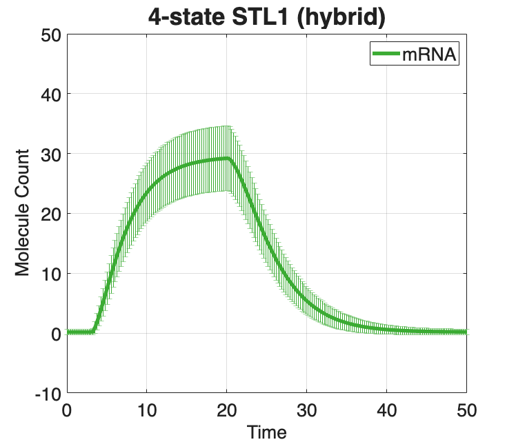
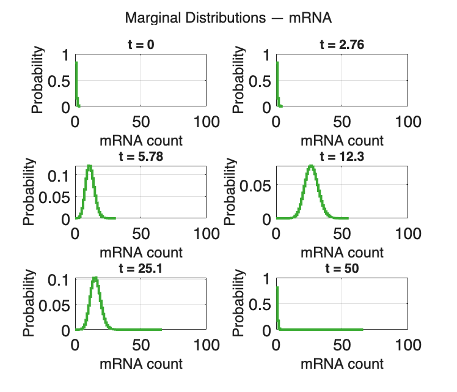

Contents
SSIT/Examples/example_13_SolveSSITModels_Hybrid
%%%%%%%%%%%%%%%%%%%%%%%%%%%%%%%%%%%%%%%%%%%%%%%%%%%%%%%%%%%%%%%%%%%%%%%%%%%
Section 2.4: Complex models
* Solve a model by using a hybrid deterministic-stochastic approach
%%%%%%%%%%%%%%%%%%%%%%%%%%%%%%%%%%%%%%%%%%%%%%%%%%%%%%%%%%%%%%%%%%%%%%%%%%%
Preliminaries
Use the STL1 model from example_1_CreateSSITModels
%clear %close all addpath(genpath('../src')); % example_1_CreateSSITModels % View model summaries: STL1_4state.summarizeModel %%%%%%%%%%%%%%%%%%%%%%%%%%%%%%%%%%%%%%%%%%%%%%%%%%%%%%%%%%%%%%%%%%%%%%%%%%% % Adjust a model to treat some species (i.e., upstream reactions) using an % ODE formulation, while having other species (i.e., downstream species) % evolve in a discrete stochastic manner using FSP. This runs significantly % faster than full FSP solutions. %%%%%%%%%%%%%%%%%%%%%%%%%%%%%%%%%%%%%%%%%%%%%%%%%%%%%%%%%%%%%%%%%%%%%%%%%%% % Create a copy of our models: STL1_hybrid = STL1_4state; % Set the times at distributions will be computed: STL1_hybrid.tSpan = linspace(0,50,200); % Set 'useHybrid' to true: STL1_hybrid.useHybrid = true; % Define which species will be solved by ODEs: STL1_hybrid.hybridOptions.upstreamODEs = {'g1','g2','g3','g4'}; % Set solution scheme to FSP: STL1_hybrid.solutionScheme = 'FSP'; % View summary of hybrid STL1 model, expecting: % Species: % g1; IC = 1; upstream ODE % g2; IC = 0; upstream ODE % g3; IC = 0; upstream ODE % g4; IC = 0; upstream ODE % mRNA; IC = 0; discrete stochastic STL1_hybrid.summarizeModel % Optionally, define a custom constraint on the species: % (e.g.,'offGene'+'onGene') STL1_hybrid.customConstraintFuns = []; % Set FSP 1-norm error tolerance: STL1_hybrid.fspOptions.fspTol = 1e-4; % Guess initial bounds on FSP StateSpace: STL1_hybrid.fspOptions.bounds = [1,1,1,1,300]; % This function compiles and stores the given reaction propensities % into symbolic expression functions that use sparse matrices: STL1_hybrid = STL1_hybrid.formPropensitiesGeneral('STL1_hybrid'); % Have FSP approximate the steady state for the initial distribution: STL1_hybrid.fspOptions.initApproxSS = true; % Solve STL1_hybrid: [STL1_hybrid_FSPsoln,STL1_hybrid.fspOptions.bounds] = STL1_hybrid.solve;
Species:
g1; IC = 1; discrete stochastic
g2; IC = 0; discrete stochastic
g3; IC = 0; discrete stochastic
g4; IC = 0; discrete stochastic
mRNA; IC = 0; discrete stochastic
Reactions:
Reaction 1:
s1: 1*g1 --> 1*g2
w1: k12*g1
Reaction 2:
s2: 1*g2 --> 1*g1
w2: (max(0,k21o*(1-k21i*Hog1)))*g2
Reaction 3:
s3: 1*g2 --> 1*g3
w3: k23*g2
Reaction 4:
s4: 1*g3 --> 1*g2
w4: k32*g3
Reaction 5:
s5: 1*g3 --> 1*g4
w5: k34*g3
Reaction 6:
s6: 1*g4 --> 1*g3
w6: k43*g4
Reaction 7:
s7: NULL --> 1*mRNA
w7: kr1*g1
Reaction 8:
s8: NULL --> 1*mRNA
w8: kr2*g2
Reaction 9:
s9: NULL --> 1*mRNA
w9: kr3*g3
Reaction 10:
s10: NULL --> 1*mRNA
w10: kr4*g4
Reaction 11:
s11: 1*mRNA --> NULL
w11: dr*mRNA
Input Signals:
Hog1(t) = A*(((1-(exp(1)^(-r1*(t-t0))))*exp(1)^(-r2*(t-t0)))/(1+((1-(exp(1)^(-r1*(t-t0))))*exp(1)^(-r2*(t-t0)))/M))^n*(t>t0)
Model Parameters:
{'t0' } {[3.1700e+00]}
{'k12' } {[ 78]}
{'k21o'} {[ 192000]}
{'k21i'} {[ 3200]}
{'k23' } {[4.0200e-01]}
{'k34' } {[7.8000e+00]}
{'k32' } {[1.6200e+00]}
{'k43' } {[2.2800e+00]}
{'dr' } {[2.9400e-01]}
{'kr1' } {[4.6800e-02]}
{'kr2' } {[7.2000e-01]}
{'kr3' } {[5.9400e+01]}
{'kr4' } {[3.2400e+00]}
{'r1' } {[4.1400e-03]}
{'r2' } {[4.2600e-01]}
{'A' } {[9.3000e+09]}
{'M' } {[6.4000e-04]}
{'n' } {[3.1000e+00]}
Species:
g1; IC = 1; upstream ODE
g2; IC = 0; upstream ODE
g3; IC = 0; upstream ODE
g4; IC = 0; upstream ODE
mRNA; IC = 0; discrete stochastic
Reactions:
Reaction 1:
s1: 1*g1 --> 1*g2
w1: k12*g1
Reaction 2:
s2: 1*g2 --> 1*g1
w2: (max(0,k21o*(1-k21i*Hog1)))*g2
Reaction 3:
s3: 1*g2 --> 1*g3
w3: k23*g2
Reaction 4:
s4: 1*g3 --> 1*g2
w4: k32*g3
Reaction 5:
s5: 1*g3 --> 1*g4
w5: k34*g3
Reaction 6:
s6: 1*g4 --> 1*g3
w6: k43*g4
Reaction 7:
s7: NULL --> 1*mRNA
w7: kr1*g1
Reaction 8:
s8: NULL --> 1*mRNA
w8: kr2*g2
Reaction 9:
s9: NULL --> 1*mRNA
w9: kr3*g3
Reaction 10:
s10: NULL --> 1*mRNA
w10: kr4*g4
Reaction 11:
s11: 1*mRNA --> NULL
w11: dr*mRNA
Input Signals:
Hog1(t) = A*(((1-(exp(1)^(-r1*(t-t0))))*exp(1)^(-r2*(t-t0)))/(1+((1-(exp(1)^(-r1*(t-t0))))*exp(1)^(-r2*(t-t0)))/M))^n*(t>t0)
Model Parameters:
{'t0' } {[3.1700e+00]}
{'k12' } {[ 78]}
{'k21o'} {[ 192000]}
{'k21i'} {[ 3200]}
{'k23' } {[4.0200e-01]}
{'k34' } {[7.8000e+00]}
{'k32' } {[1.6200e+00]}
{'k43' } {[2.2800e+00]}
{'dr' } {[2.9400e-01]}
{'kr1' } {[4.6800e-02]}
{'kr2' } {[7.2000e-01]}
{'kr3' } {[5.9400e+01]}
{'kr4' } {[3.2400e+00]}
{'r1' } {[4.1400e-03]}
{'r2' } {[4.2600e-01]}
{'A' } {[9.3000e+09]}
{'M' } {[6.4000e-04]}
{'n' } {[3.1000e+00]}
Plots for FSP solutions:
Means and standard deviations:
STL1_hybrid.plotFSP(solution=STL1_hybrid_FSPsoln, TickLabelSize=20,... speciesNames=STL1_hybrid.species(5), plotType='meansAndDevs',... Title='4-state STL1 (hybrid)', TitleFontSize=26, LegendFontSize=20,... YLabel='Molecule Count', YLim=[-10,50], lineProps={'linewidth',4},... LegendLocation='northeast', AxisLabelSize=20, Colors=[0.23,0.67,0.2]); % Marginal distributions: STL1_hybrid.plotFSP(solution=STL1_hybrid_FSPsoln, plotType='marginals',... speciesNames=STL1_hybrid.species(5), indTimes=[1,12,24,50,101,200],... lineProps={'linewidth',3}, XLim=[0,100], Colors=[0.23,0.67,0.2],... AxisLabelSize=20, TickLabelSize=20)


Save hybrid model & solution
saveNames = unique({
'STL1_hybrid'
'STL1_hybrid_FSPsoln'
});
save('example_13_ComplexModels_Hybrid',saveNames{:})